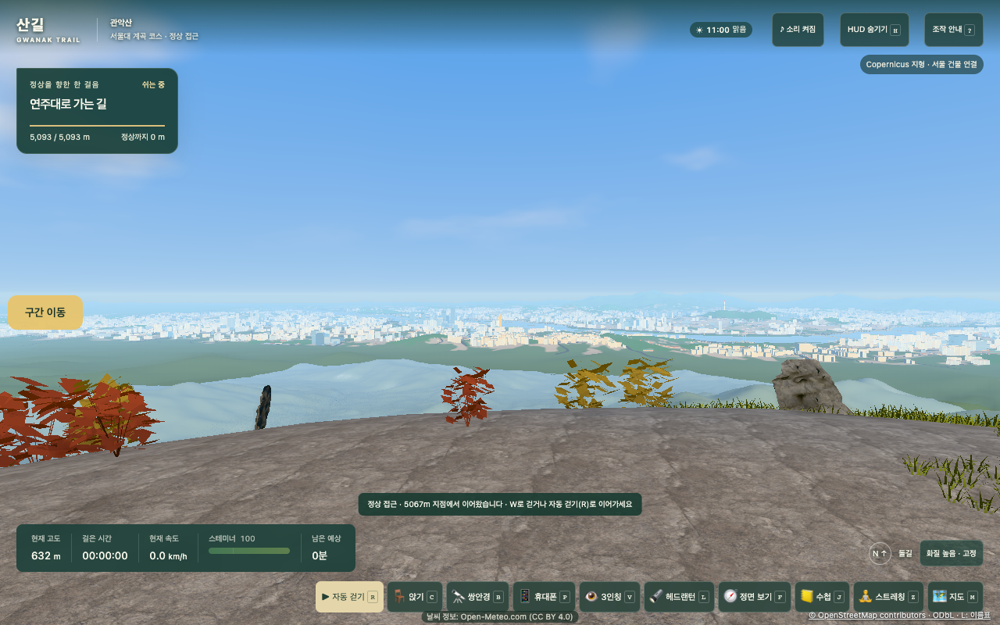
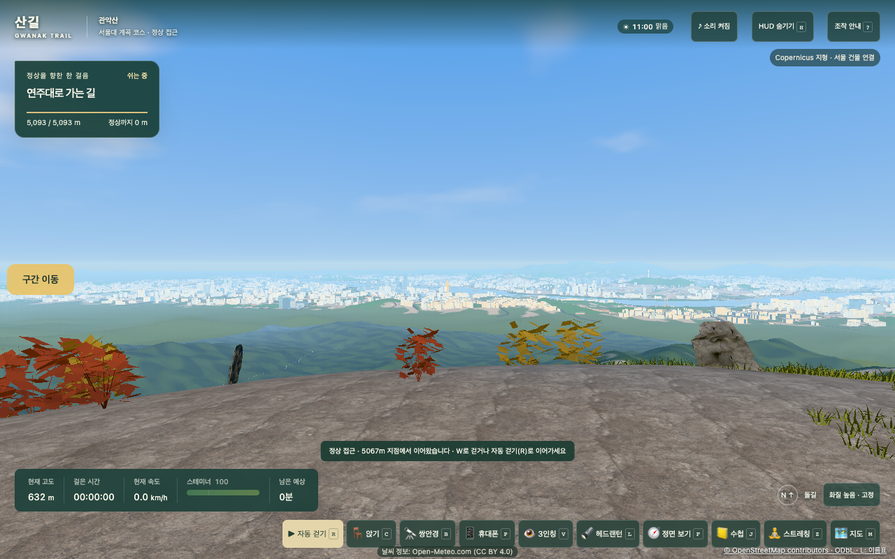
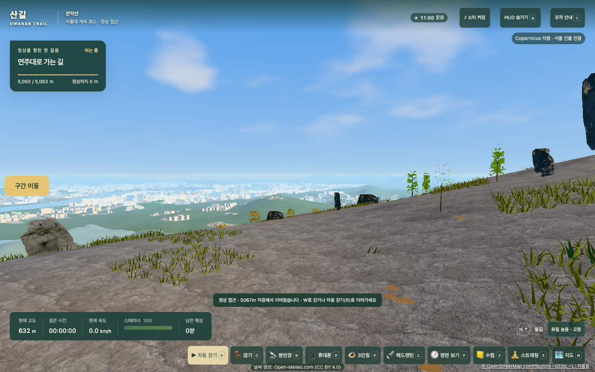
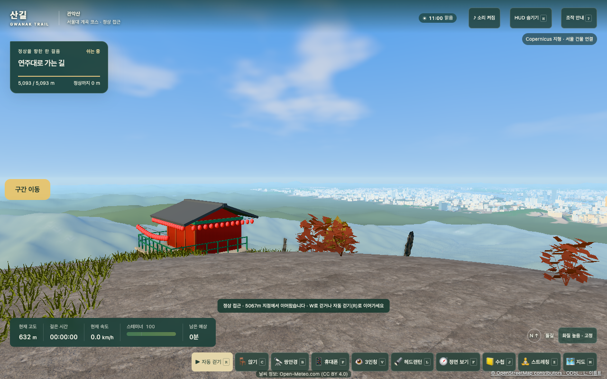
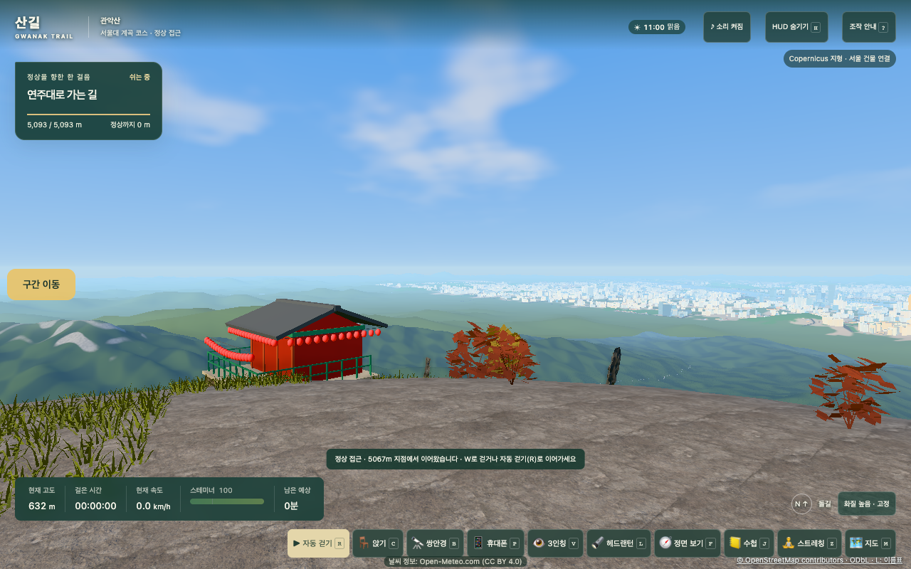
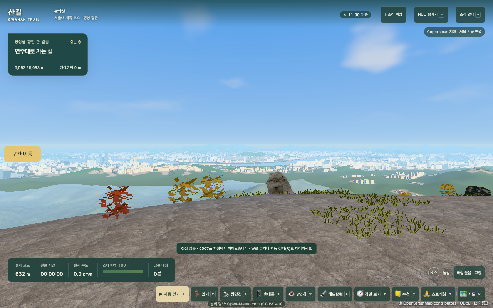
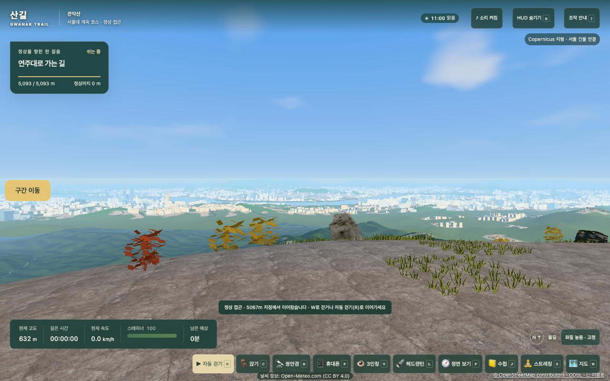

4차 개선 S3 · 정상 주변 사면(숲·화강암 노두) — 수정 전·후
모두 길 끝(정상석 서남쪽)에서 맑음·오전 11시로 찍었습니다. 345.6°·58.5°는 산리서치 비교표 S3의 촬영 방위와 같습니다(참고 사진 P5·P9). 형상은 바꾸지 않아 서울 도심·한강·롯데월드타워 시야는 그대로입니다.
345.6° — 서울 도심·한강 (비교표 end-b345.6, 참고 P5)

수정 전: 바랜 청백색 매끈한 사면
수정 후: 짙은 숲 사면, 골·마루 음영58.5° — 롯데월드타워 (비교표 end-b58.5)

수정 전수정 후: 타워·도심 시야 그대로300° — 응진전 너머 서쪽 능선 (참고 P9)

수정 전
수정 후: 높은 능선에 회백색 화강암 노두10.2° — 서울 쪽 시야 확인

수정 전
수정 후150° — 정상 마루(사면 안 보임, 변화 없음 확인)